Cricket
India Edge Pakistan by One Wicket Off the Last Ball to Win U19 Asia Cup Final
Mohit Ulva hit a boundary off the final ball as India chased down 338 to beat Pakistan by one wicket and win the U19 Asia Cup at Al Amerat on Saturday.
Pakistan • Sports
Cricket first, plus the games Pakistan loves.
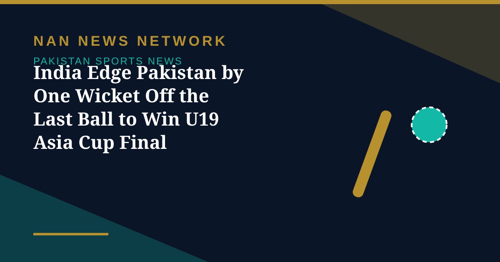
Mohit Ulva hit a boundary off the final ball as India chased down 338 to beat Pakistan by one wicket and win the U19 Asia Cup at Al Amerat on Saturday.
Mohit Ulva hit a boundary off the final ball as India chased down 338 to beat Pakistan by one wicket and win the U19 Asia Cup at Al Amerat on Saturday.
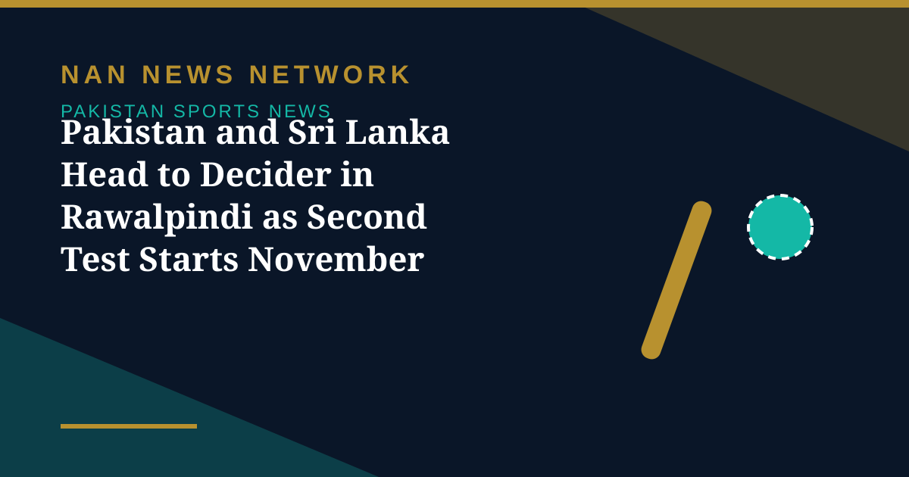
After a rain-hit first Test ended in a draw, Pakistan and Sri Lanka meet again at Rawalpindi Cricket Stadium from November 17 in the second and final Test of the series.
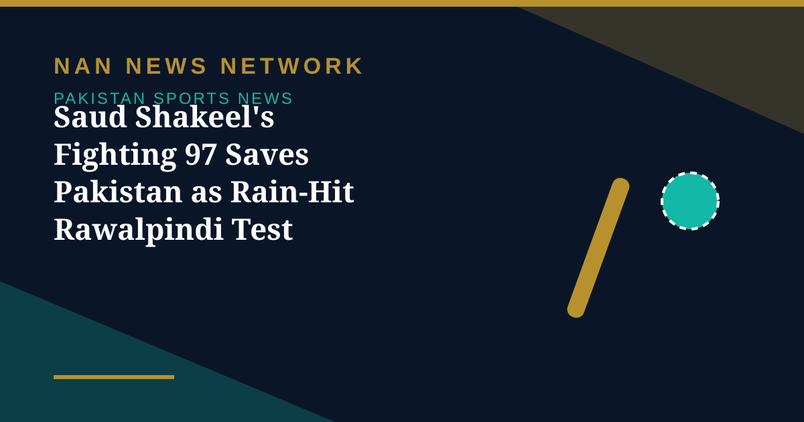
Saud Shakeel hit 97 off 210 balls as Pakistan finished on 284-8, a lead of 272, to hold Sri Lanka to a draw in the weather-hit first Test in Rawalpindi.
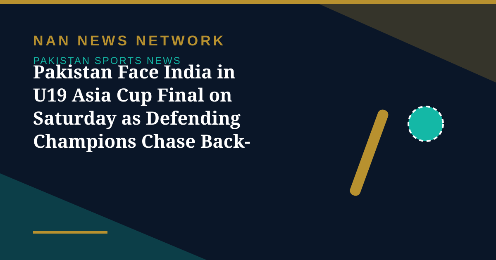
Unbeaten defending champions Pakistan meet India in the U19 Asia Cup final at Al Amerat on Saturday, November 14, after both sides won their semi-finals on Thursday.
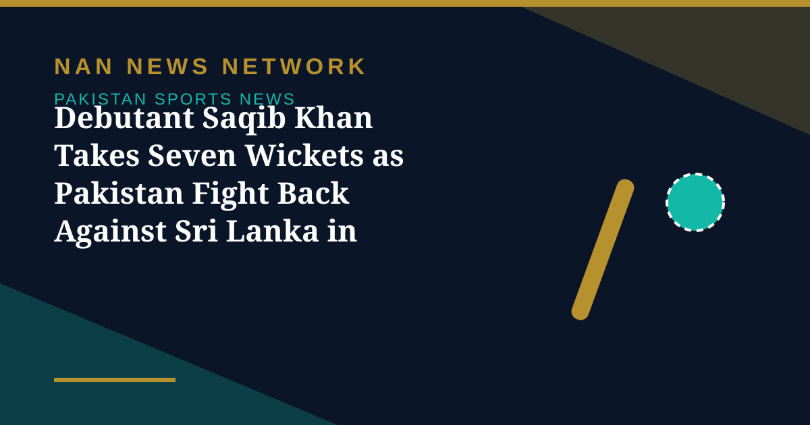
Debutant fast bowler Saqib Khan took 7-130 on day four in Rawalpindi, sparking Sri Lanka's collapse and becoming only the second Pakistani pacer to take seven wickets on Test debut.
Defending champions Pakistan thrashed Bangladesh by nine wickets in the U19 Asia Cup semi-final in Oman and will face India in the final.
Dhananjaya de Silva and Kusal Mendis struck unbeaten centuries in a 249-run stand to lift Sri Lanka to 404 for 4 at stumps on day three of the Rawalpindi Test, trailing Pakistan by just 30 runs.
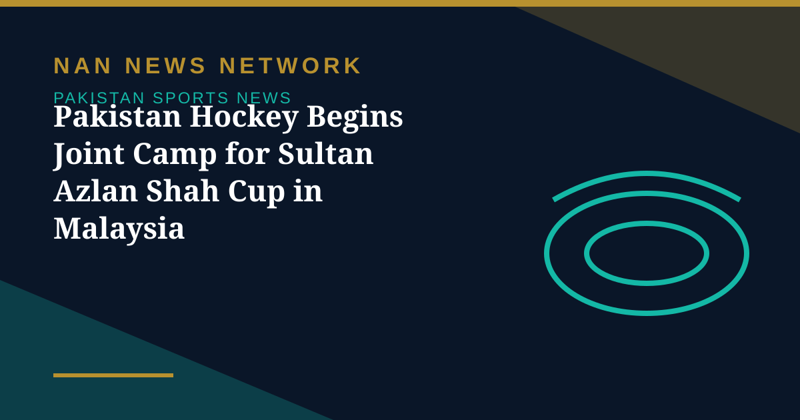
The Pakistan Hockey Federation has set up a joint national training camp in Islamabad for the 32nd Sultan Azlan Shah Cup, which runs from November 20 to 28 in Ipoh, Malaysia.
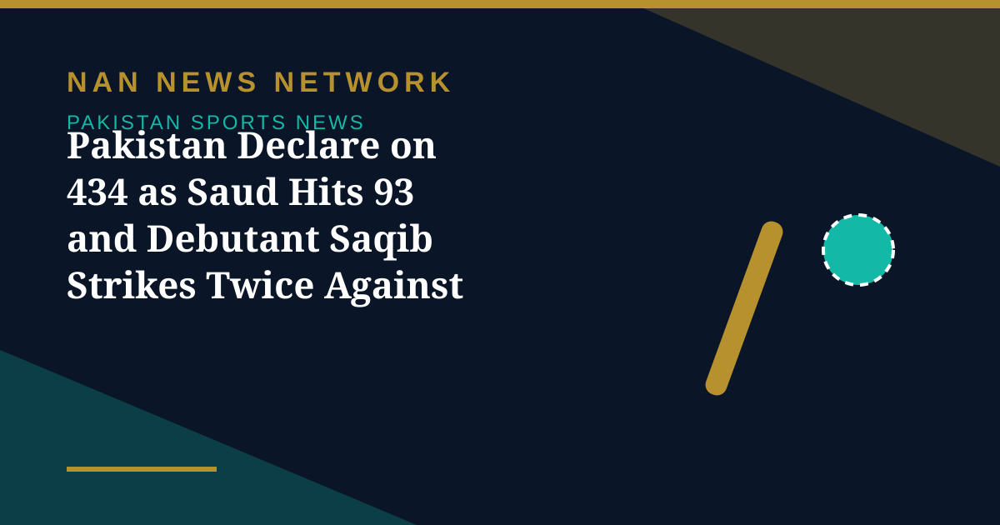
Saud Shakeel fell seven short of a century as Pakistan declared on 434 for 9 in Rawalpindi, before debutant Saqib Khan took two wickets to leave Sri Lanka 114 for 3 at stumps on day two.
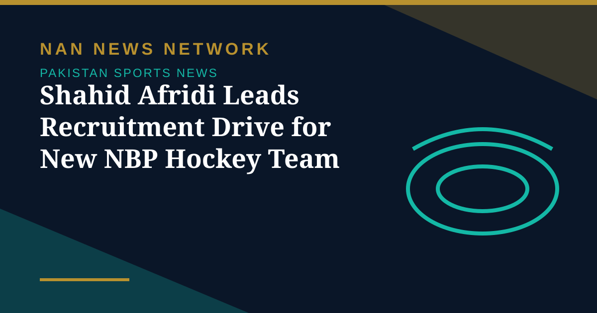
Former Pakistan captain Shahid Afridi has begun selecting players for a new National Bank of Pakistan hockey team, in a move aimed at supporting the revival of the national sport.
Fifties from debutants Tayyab Arif and Mohammad Taha, alongside skipper Babar Azam and Saud Shakeel, helped Pakistan reach 281-5 at stumps on the opening day of the first Test in Rawalpindi.
Babar Azam's half-century against Sri Lanka was his 70th score of fifty or more as Pakistan captain, equalling Misbah-ul-Haq's record — though his wait for a Test hundred now stretches to 41 innings.
Captain Babar Azam hopes an overhauled Pakistan can make a fresh start in the first Test against Sri Lanka, starting in Rawalpindi on Monday, after the disastrous 3-0 whitewash in England.
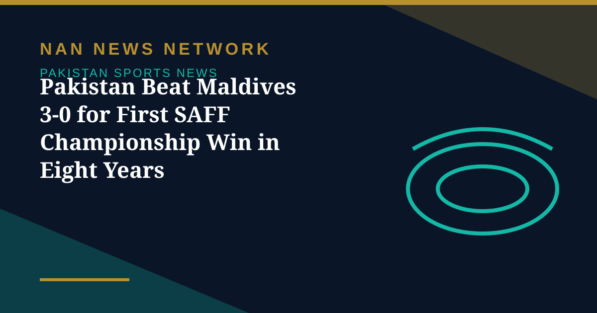
Najeebullah Bettani scored twice as Pakistan cruised past the Maldives 3-0 in Dhaka, their first win in the SAFF Championship in over eight years, keeping their semi-final hopes alive.
The PCB has added Aamir Jamal, Ali Shabbir, Saqib Khan and Muhammad Tayyab Arif to Pakistan's Test squad for the Sri Lanka series, with three uncapped players earning maiden call-ups two days before the Rawalpindi opener.
Pakistan's men's squash team won the gold medal at the 23rd Asian Team Squash Championship in Islamabad, beating South Korea 2-0 in the final for their first Asian team title since 2016.
FATA beat Lahore Whites by 241 runs on the final day of the Quaid-e-Azam Trophy Gold opening round, with Babar Azam managing only 28 and 42 before smashing his bat on the pitch in frustration.
Pakistan's two-Test home series against Sri Lanka begins on November 9 in Rawalpindi, with the hosts coming off a domestic round in which Mohammad Rizwan struck a double century while captain Babar Azam managed only 28 and 42.

Mohammad Huraira's 141 and Mohammad Farooq's 123 shaped the third day of the Quaid-e-Azam Trophy Gold opening round, with Sialkot Blues declaring on 388 for five and FATA setting Lahore Whites 412 to win.

Peshawar Whites staged a remarkable comeback to beat Bahawalpur by five wickets, while Abbottabad and Azad Jammu and Kashmir also secured victories on the third day of the Quaid-e-Azam Trophy Silver opening round.
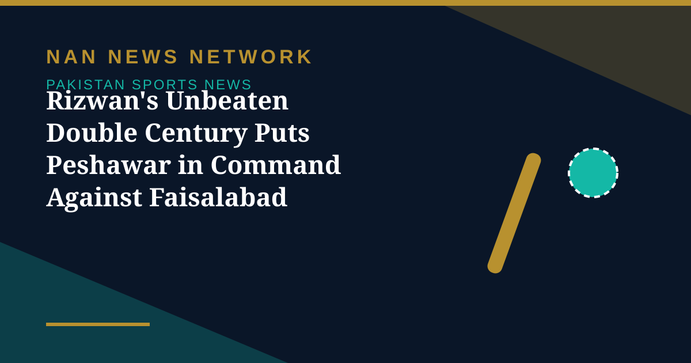
Peshawar captain Mohammad Rizwan struck an unbeaten 200 off 252 balls, with 35 fours and a six, as Peshawar declared at 503-4 on day two of their Quaid-e-Azam Trophy opener against Faisalabad.
Babar Azam was given out caught behind for 28 against FATA after replays appeared to show the ball hitting his thigh pad — and with no DRS in domestic cricket, he had no way to challenge the call.
The PCB has named Abdul Samad captain of a 15-member Pakistan Shaheens squad for the ACC Men's Asia Cup Rising Stars 2026 in Qatar, where the defending champions open against UAE on November 20.
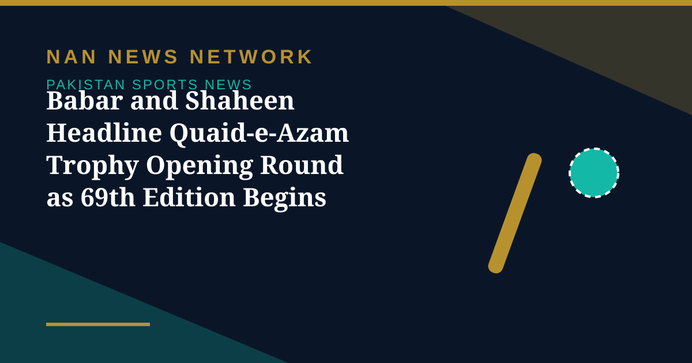
Pakistan Test captain Babar Azam and ODI skipper Shaheen Shah Afridi will headline the opening round of the 69th Quaid-e-Azam Trophy, which begins across Islamabad, Abbottabad and Rawalpindi on Tuesday.
The ICC fined Pakistan 5% of its match fee after the tri-series final win over Sri Lanka, ruling the side one over short — captain Shaheen Shah Afridi pleaded guilty and accepted the sanction.
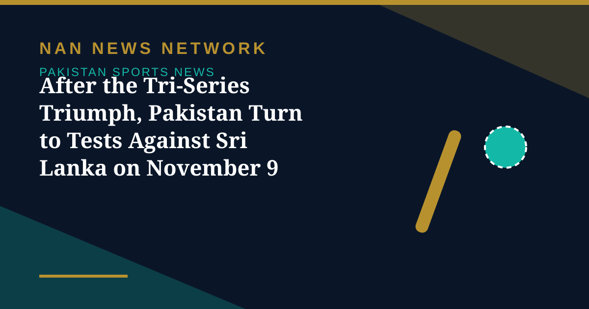
Pakistan will now play a two-match Test series against Sri Lanka starting on November 9, carrying momentum from a first home tri-series title since 2008 — and a new-look batting core that played without fear.
Fakhar Zaman's 127 off 99 balls led Pakistan to a three-wicket win over Sri Lanka in the ODI tri-series final at Gaddafi Stadium, Lahore, chasing down 326 with nine balls to spare.
Captain Abbas Afridi smashed an unbeaten 73 off 16 balls as Pakistan beat Oman by 18 runs in the Plate final of the Hong Kong Sixes on Sunday, finishing fifth overall.
Sri Lanka posted 325 for 8 in the tri-series final at Gaddafi Stadium on Saturday, with Kamindu Mendis scoring a magnificent 131, leaving Pakistan chasing 326 for the trophy.
Pakistan defeated hosts Hong Kong by five wickets in the Plate semi-final of the Hong Kong Sixes on Saturday, setting up a final against Oman on Sunday.
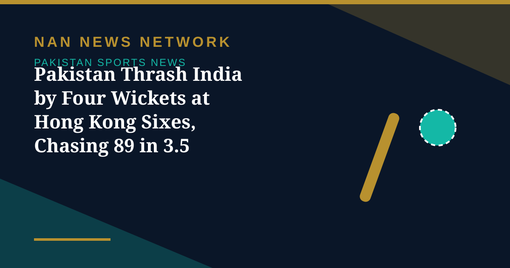
Defending champions Pakistan bounced back from an earlier defeat to beat India by four wickets at the Hong Kong Sixes 2026, chasing down 89 in just 3.5 overs at Mong Kok on October 30.
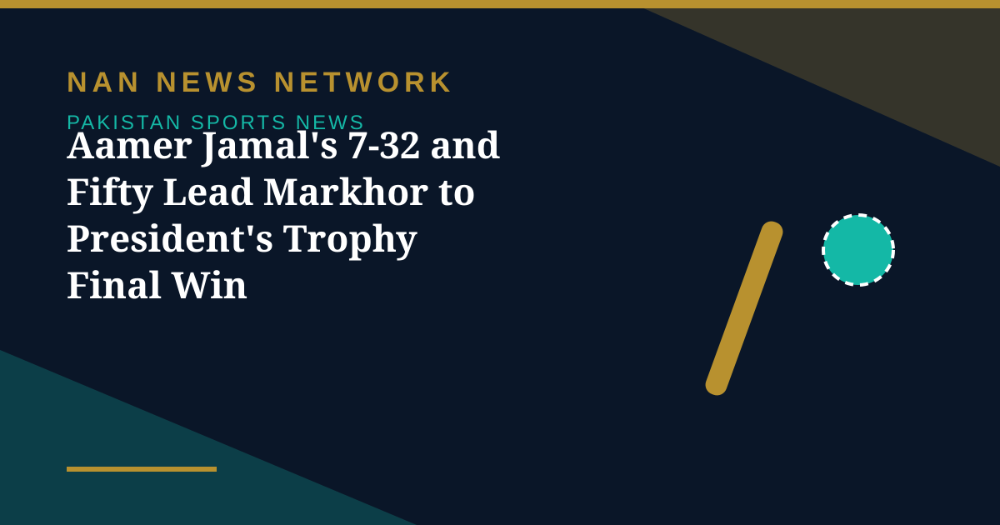
All-rounder Aamer Jamal took 7 for 32 and scored 55 from number eight as Markhor IT Solutions beat State Bank of Pakistan to lift the President's Trophy on October 30, 2026.
England face Sri Lanka in Lahore on October 29 in the last league match of the tri-series, with the final set for Gaddafi Stadium on October 31, 2026.
Pakistan ended their FIP World Cup qualifying campaign with a 2-1 win over Hong Kong in Kuwait City, but earlier losses to Saudi Arabia and Kuwait ended their hopes.
Dilshan Madushanka's 5 for 34 bowled Pakistan out for 110 as Sri Lanka won by eight wickets in Lahore to book a place in the October 31 tri-series final.
The ICC fined Pakistan pacer Haris Rauf 20% of his match fee and added a demerit point, taking his tally to five, after an on-field confrontation with England's Will Jacks.
Defending champions Pakistan head to the Hong Kong Sixes 2026, starting October 30, with Mohammad Abbas Afridi named captain of a seven-player squad placed in Group C alongside India and the UAE.
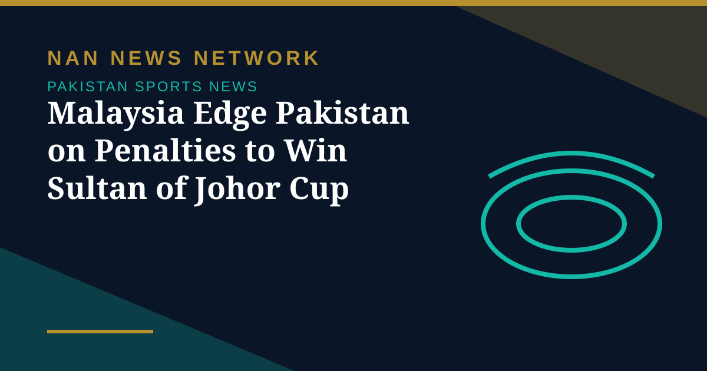
Malaysia came from two goals down to beat Pakistan 4-3 in a penalty shootout and win the Sultan of Johor Cup 2026 after an entertaining final ended 2-2 in Johor Bahru.
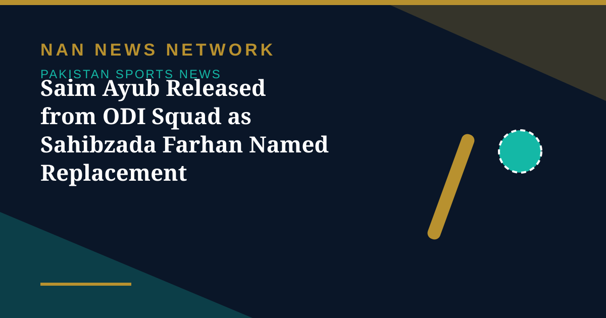
The PCB confirmed on October 26 that opener Saim Ayub has been released from Pakistan's ODI squad for the remainder of the tri-series, with Sahibzada Farhan named as his replacement.
Egypt's Karim El Hammamy and Rowan Elaraby won the men's and women's titles respectively at the Venus ABC Open squash championship in Karachi on Sunday.
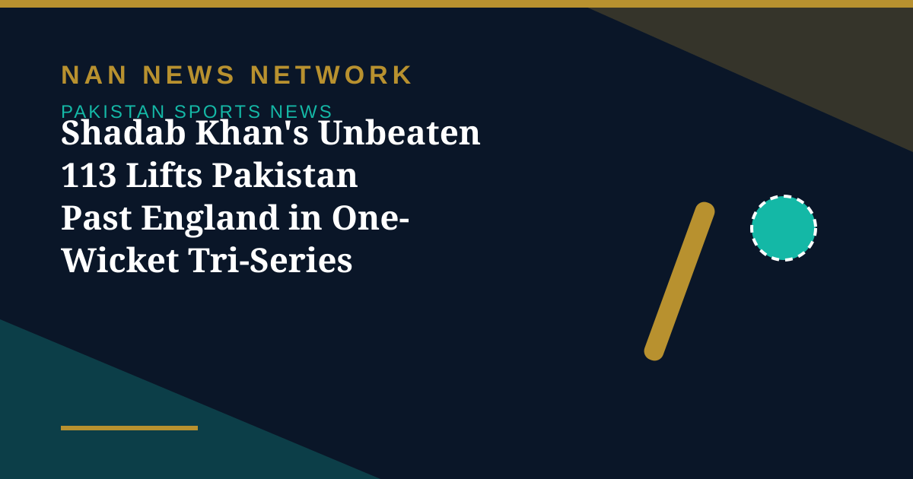
Chasing 242 from 154-9, Shadab and Haris Rauf shared a record 89-run last-wicket stand to book Pakistan's place in the tri-series final at Lahore.
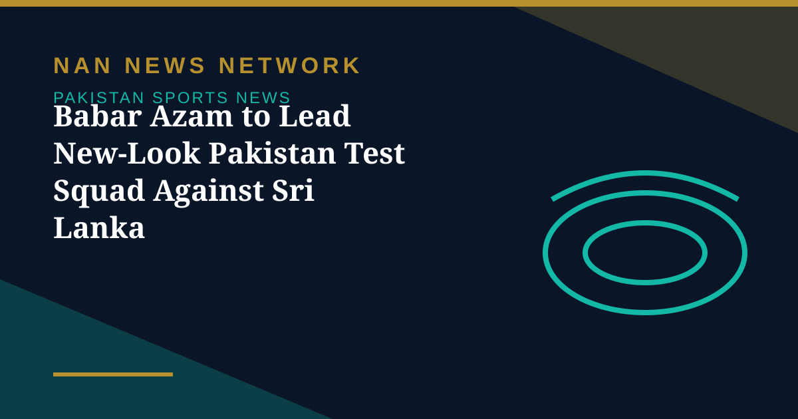
Mohammad Rizwan, Imam-ul-Haq and Shan Masood are dropped as three uncapped players earn call-ups for the two-Test home series in Rawalpindi and Lahore.
At Gaddafi Stadium, Lahore, Pakistan swapped green for pink on October 25, with pink stumps, pink ribbons and free screenings for fans from October 24 to 26.